What to look for in August अगस्त में
Species whose season is August in eastern Uttar Pradesh, according to published accounts. A further 262 species are about all year.
जनवरी · फ़रवरी · मार्च · अप्रैल · मई · जून · जुलाई · अगस्त · सितंबर · अक्टूबर · नवंबर · दिसंबर

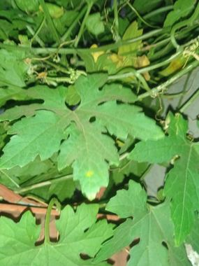
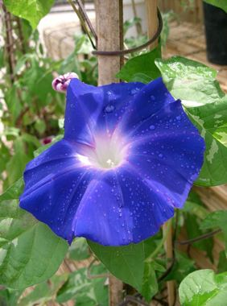
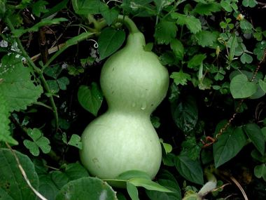
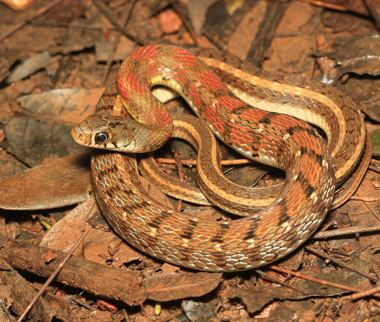
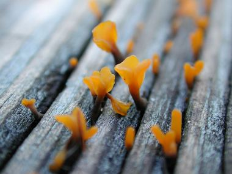
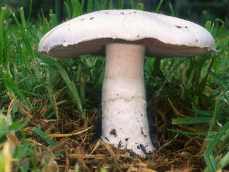
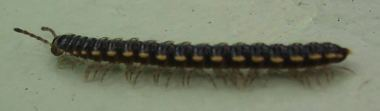
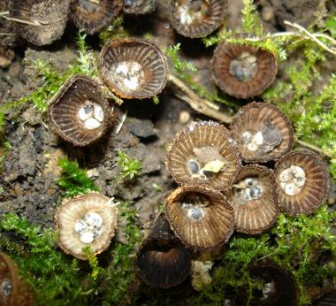
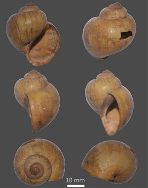
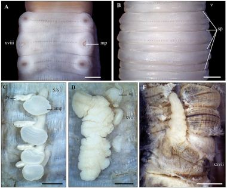
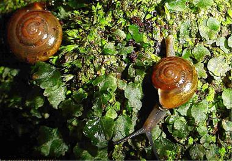
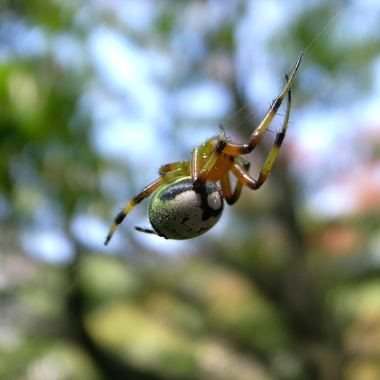
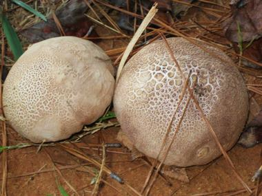
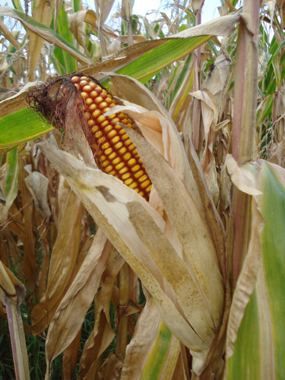
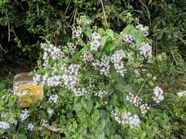
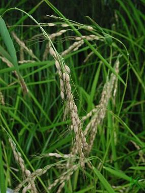
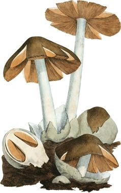
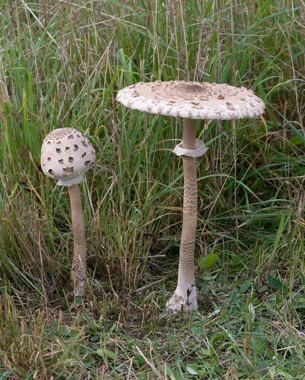
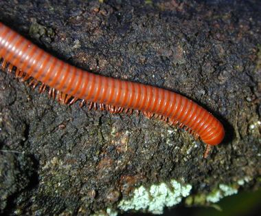
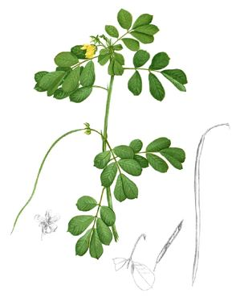
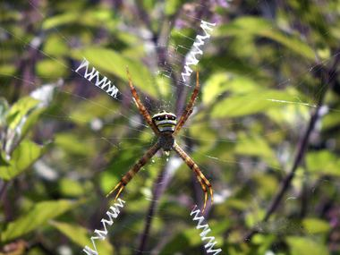
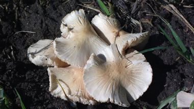
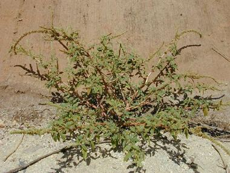
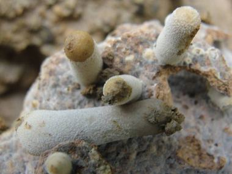
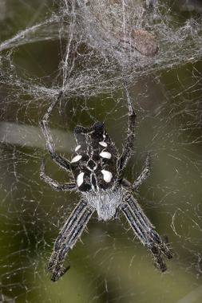
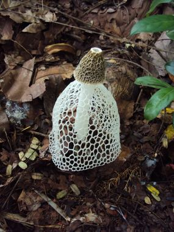
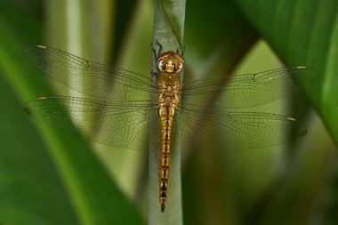
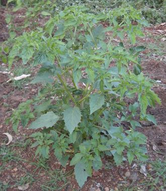
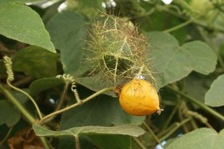
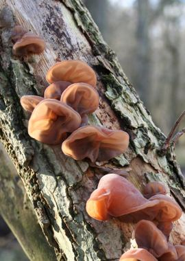
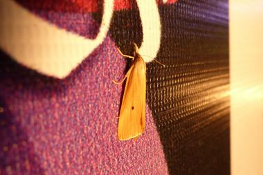